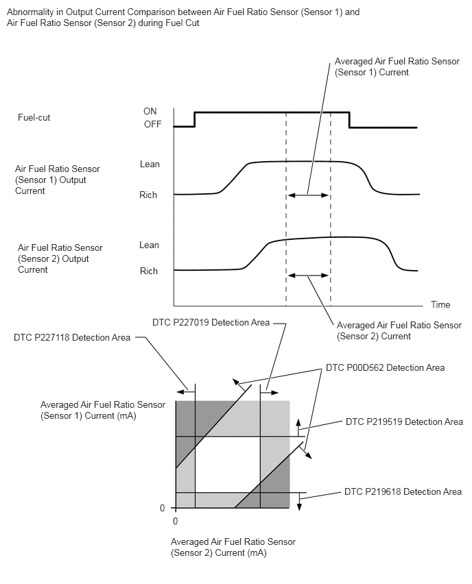

| Last Modified: 10-07-2025 | 6.11:8.1.0 | Doc ID: RM100000002KD1I |
| Model Year Start: 2024 | Model: Tacoma HV | Prod Date Range: [03/2024 - ] |
| Title: T24A-FTS (ENGINE CONTROL): SFI SYSTEM (for 1Motor-HEV Model): P00D562; A/F (O2) Sensor Correlation Bank 1 Sensor 1/Bank 1 Sensor 2 Signal Compare Failure; 2024 - 2026 MY Tacoma HV [03/2024 - ] | ||
|
DTC |
P00D562 |
A/F (O2) Sensor Correlation Bank 1 Sensor 1/Bank 1 Sensor 2 Signal Compare Failure |
DESCRIPTION
Refer to DTC P003012.
Click here
![2024 - 2026 MY Tacoma HV [03/2024 - ]; T24A-FTS (ENGINE CONTROL): SFI SYSTEM (for 1Motor-HEV Model): P003012,P003013,P101A9E; HO2S Heater Control Bank 1 Sensor 1 Circuit Short to Battery](../../../../stylegraphics/info.gif)
Refer to DTC P003612.
Click here
|
DTC No. |
Detection Item |
DTC Detection Condition |
Trouble Area |
MIL |
DTC Output from |
Priority |
Note |
|---|---|---|---|---|---|---|---|
|
P00D562 |
A/F (O2) Sensor Correlation Bank 1 Sensor 1/Bank 1 Sensor 2 Signal Compare Failure |
The difference between the averaged output values for air fuel ratio sensor (sensor 1) and air fuel ratio sensor (sensor 2) during fuel cut exceeds the threshold (2 trip detection logic). |
|
Comes on |
Engine |
B |
|
MONITOR DESCRIPTION
Abnormality in Output Current Comparison between Air Fuel Ratio Sensor (Sensor 1) and Air Fuel Ratio Sensor (Sensor 2) during Fuel Cut
Comparing the averaged output values during fuel cut for air fuel ratio sensor (sensor 1) and air fuel ratio sensor (sensor 2), if the difference between these two is outside the normal range, the ECM illuminates the MIL and stores a DTC.
MONITOR STRATEGY
|
Related DTCs |
P00D5: Air fuel ratio sensors comparison monitor during fuel cut |
|
Required Sensors/Components (Main) |
Air fuel ratio sensor (sensor 1) Air fuel ratio sensor (sensor 2) |
|
Required Sensors/Components (Related) |
Crankshaft position sensor Engine coolant temperature sensor Throttle position sensor |
|
Frequency of Operation |
Once per driving cycle |
|
Duration |
10 seconds |
|
MIL Operation |
2 driving cycles |
|
Sequence of Operation |
None |
TYPICAL ENABLING CONDITIONS
|
Auxiliary battery voltage |
11 V or higher |
|
Engine coolant temperature |
75°C (167°F) or higher |
|
Atmospheric pressure |
76 kPa(abs) [11.02 psi(abs)] or higher |
|
Air fuel ratio sensor (sensor 1) status |
Activated |
|
Fuel cut |
On |
|
Air fuel ratio sensor (sensor 1) malfunction (P2237, P2238, P2239, P2252, P2253) |
Not detected |
|
Air fuel ratio sensor (sensor 2) malfunction (P22AB, P22AC, P22AD, P22B3, P22B4) |
Not detected |
TYPICAL MALFUNCTION THRESHOLDS
|
(Averaged air fuel ratio sensor (sensor 1) current during fuel cut / air fuel ratio sensor (sensor 1) base) - (averaged air fuel ratio sensor (sensor 2) current during fuel cut / air fuel ratio sensor (sensor 2) base) |
Less than -1.18, or higher than 0.85 |
MONITOR RESULT
Refer to detailed information in Checking Monitor Status.
Click here
P00D5: O2 Sensor / OUTPUT RATE B1S1/B1S2
|
Monitor ID |
Test ID |
Scaling |
Unit |
Description |
|---|---|---|---|---|
|
$01 |
$97 |
Multiply by 0.001 |
No dimension |
Output rate bank 1 sensor 1/bank 1 sensor 2 |
CONFIRMATION DRIVING PATTERN
HINT:
- After repair has been completed, clear the DTC
and then check that the vehicle has returned to
normal by performing the following All Readiness
check procedure.
Click here
- When clearing the permanent DTCs, refer to the
"CLEAR PERMANENT DTC" procedure.
Click here
- Clear the DTCs (even if no DTCs are stored, perform the clear DTC procedure).
- Turn the ignition switch off and wait for at least 30 seconds.
- Enter the following menus: Powertrain / Engine / Monitor / Current Monitor.
- Check that Catalyst Efficiency / Current is Incomplete.
- Put the engine in Inspection Mode (for measuring
Exhaust Gas).
Click here
- Start the engine and warm it up until the engine
coolant temperature is 75°C (167°F) or higher [A].
HINT:
In order to keep the idle stable, turn off the A/C and all other electric loads and do not perform any shift operations.
- With the engine running, drive the vehicle at
approximately 75 km/h (46 mph) for 10 minutes or more
[B].
CAUTION:
When performing the confirmation driving pattern, obey all speed limits and traffic laws.
HINT:
- Drive the vehicle while keeping the engine load as constant as possible.
- If the engine stops, further depress the accelerator pedal to restart the engine.
- With the shift state S, drive the vehicle at 75
km/h (46 mph), and then decelerate the vehicle by
releasing the accelerator pedal for 10 seconds or
more to perform the fuel-cut [C].
CAUTION:
When performing the confirmation driving pattern, obey all speed limits and traffic laws.
- Repeat step [C] 2 times or more in one driving cycle.
- Enter the following menus: Powertrain / Engine / Trouble Codes / Pending [D].
- Read the pending DTCs.
HINT:
- If a pending DTC is output, the system is malfunctioning.
- If a pending DTC is not output, perform the following procedure.
- Enter the following menus: Powertrain / Engine / Utility / All Readiness.
- Input the DTC: P00D562.
- Check the DTC judgment result.
HINT:
- If the judgment result is NORMAL, the system is normal.
- If the judgment result is ABNORMAL, the system is malfunctioning.
- If the judgment result is INCOMPLETE, drive the vehicle with the shift state S, and then perform step [C] again.
- [A] to [D]: Normal judgment procedure.
The normal judgment procedure is used to complete DTC judgment and also used when clearing permanent DTCs.
- When clearing the permanent DTCs, do not disconnect the cable from the auxiliary battery terminal or attempt to clear the DTCs during this procedure, as doing so will clear the universal trip and normal judgment histories.
CAUTION / NOTICE / HINT
NOTICE:
- Vehicle Control History may be stored in the
hybrid vehicle control ECU assembly if the engine is
malfunctioning. Certain vehicle condition information
is recorded when Vehicle Control History is stored.
Reading the vehicle conditions recorded in both the
freeze frame data and Vehicle Control History can be
useful for troubleshooting.
(Select Powertrain in Health Check and then check the time stamp data.)
- If any "Engine Malfunction" Vehicle Control History item has been stored in the hybrid vehicle control ECU assembly, make sure to clear it. However, as all Vehicle Control History items are cleared simultaneously, if any Vehicle Control History items other than "Engine Malfunction" are stored, make sure to perform any troubleshooting for them before clearing Vehicle Control History.
HINT:
- Sensor 1 refers to the sensor closest to the engine assembly.
- Sensor 2 refers to the sensor farthest away from the engine assembly.
PROCEDURE
PROCEDURE
|
1. |
CHECK ANY OTHER DTCS OUTPUT (IN ADDITION TO DTC P00D562) |
(a) Read the DTCs.
Powertrain > Engine > Trouble Codes
|
Result |
Proceed to |
|---|---|
|
P00D562 and other DTCs are output |
A |
|
P219519 or P219618 is output |
B |
|
P227019 or P227118 is output |
C |
|
P00D562 is output |
D |
HINT:
If any DTCs other than P00D562 are output, troubleshoot those DTCs first.
| A |  |
GO TO DTC CHART |
| B | |
| C | |
| D | |
REPLACE AIR FUEL RATIO SENSOR (SENSOR 1) AND AIR FUEL RATIO SENSOR (SENSOR 2) Air fuel ratio sensor (sensor 1): Click here
Air fuel ratio sensor (sensor 2): Click here
|